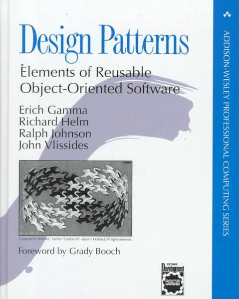
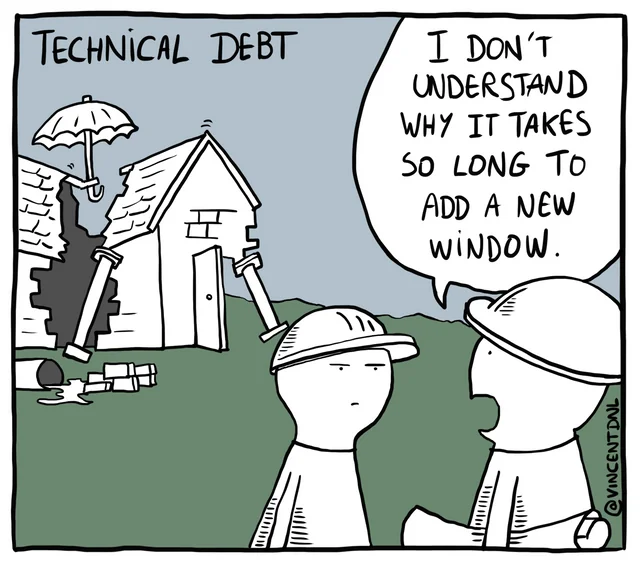
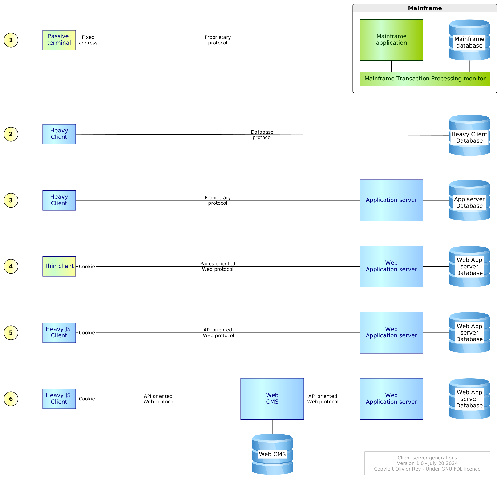
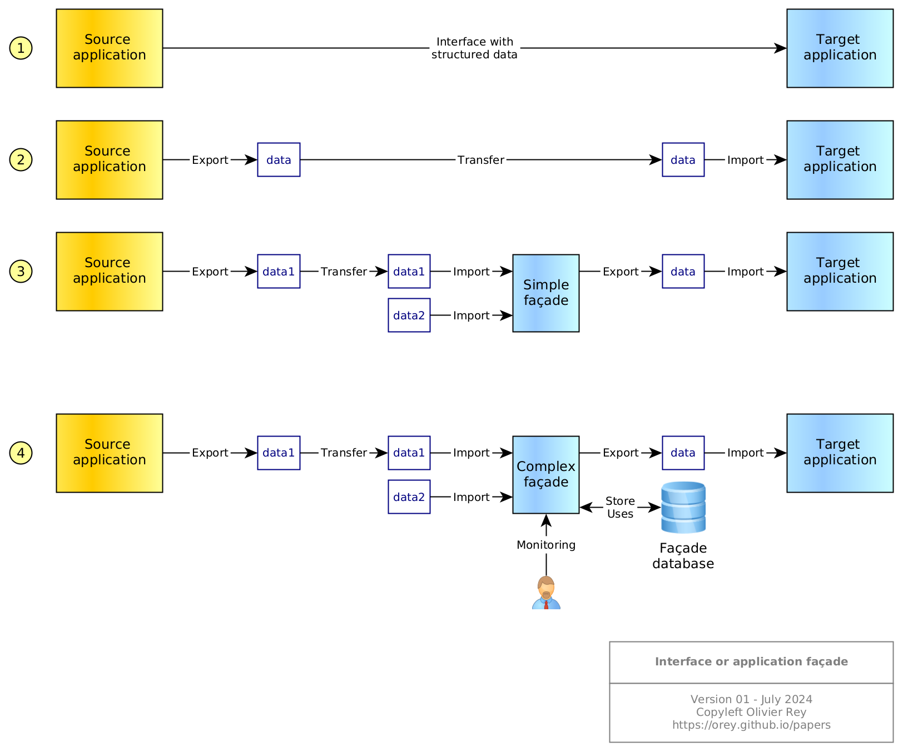
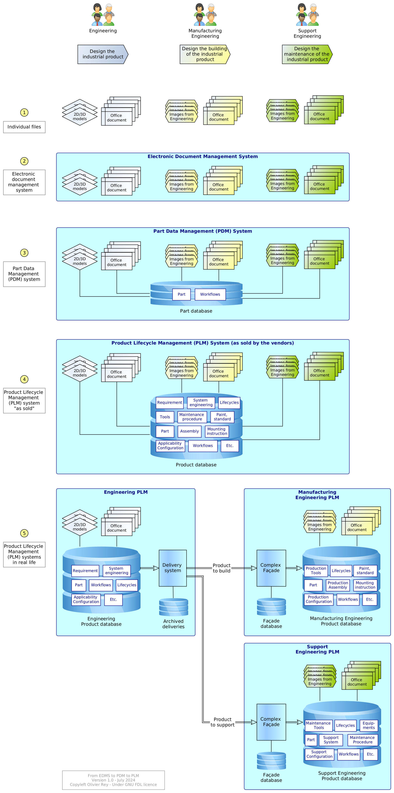

Legends of IT
(Image from Les aventures de Tintin by Hergé)
Information technology (IT) is a very recent engineering discipline and no one implied in IT projects should never forget this fact. Like all recent technological discipline at the heart of all modern businesses, it is both a marvelous tool, because it is "soft"-ware, a formidable enabler for business, and as it is representing lots of money, it is also a great place for legends and marketing messages.
As IT is a very intellectual discipline, both an engineering discipline and a creative activity, as the entry ticket of making a program run is very low, it is very easy to believe things that are untrue and to loose the global perspective of what IT is for and what are the problems it should answer to.
What criteria to judge IT legends?
The first problem we face in IT when trying to get some perspective is the problem of defining a set of criteria that will enable us to categorize the IT practices as "good" or "bad".
It is incredible that those criteria are not better known and shared, but after looking more carefully, it is easy to realize that there is no real consensus about those criteria. For sure, the consensus would mean that we could be able to estimate if some application is badly done. There are some books and some corporate or community practices but no real accepted consensus (except at low level coding).
So, we will define our own set of criteria as a kind of compass that will guide us through this journey of illusions.
Criteria #1: Simplicity
Simplicity will be our first criteria. Software should be the simplest possible, software architecture also and so is IT architecture.
Where complexity is, failure will be, as high maintenance costs.
Criteria #2: As little dependencies as possible
Dependencies should be limited to their bare minimum because they will bring constraints on our applications.
In particular, reusability of external components creates dependencies that jeopardize the value of the application and its capacity to evolve freely.
Are we writing valuable programs with added-value for the business or are we developing plugins for the last trendy giga-framework? The question is worth asking.
Software is an asset on which the business is done, so it should rely on as less other stuff as possible.
Criteria #3: Adaptability
Adaptability must be understood in the sense of ease of change. Adaptability is the reverse of technical debt: when a technology aggravates technical debt, it should never be used.
The definition we take for technical debt is defined very precisely in the article The graph-oriented programming paradigm. Adaptability means as little couplings as possible.
That's why reusability of external components can be a bad idea on the long run, we'll come back on that.
Criteria #4: Stick to standards, in particular in programming languages
At any cost, we should stick to the standard programming language and avoid, if we can, proprietary languages.
Standard languages we use should be supported by a stable community. This community does not have to be large, but it must be steady in time.
Moreover, we are safer if the language specification is opened and/or massively supported and/or standardized by ANSI, ISO or any standardization office.
Avoiding technologies owned by private companies or privately owned specific tools (like transpilers) should be a must: those companies have the IP of the products and we will not be able to switch to another provider if they decide to make their language/tool paying, or if they decide to stop maintaining it.
Criteria #5: Economics matter
The real cost of an adaptable application should be known, so is the cost of the maintenance phase and the constraints that will come attached to this maintenance (technology, skills).
The real cost of a software encompasses all the phases of the project, that's why business process analysis, functional specifications and functional testing are core skills to the success of a project and to the economical data attached to it, before go-live and afterwards.
Remember: Software is an asset and it deserves to be treated as we treat our buildings or factories.
Representing a business domain
We'll not talk about games in this article but about professional applications and technology which aim is to automate some business domain.
Before automating a business domain, it is necessary to realize that IT primary movement is to "represent" the business knowledge associated to it.
We can qualify this representation:
- The representation of any business is partial,
- It is included in the semantic space of the particular business,
- This representation is relative,
- It is composed by 2 parts:
- Representing the data often with database tools,
- Representing the business rules via programs.
So, even if this statement is obvious, creating business applications is consisting, primarily, in choosing a programming language and a database.
Modern programming introduced the choice of using giga-frameworks that bring a lot of constraints on the application software while pretending to solve all the common problems.
Legend #1: Data are absolute
| # | Criteria | Applicable |
|---|---|---|
| 1 | Simplicity | Yes |
| 2 | No dependencies | - |
| 3 | Adaptability | Yes |
| 4 | Standards | - |
| 5 | Economics | Yes |
For sure, this statement or belief is wrong, as we have shown in our article, The real nature of data: data is the result of the intersection of the application use cases (viewpoint) and the business semantic space.
In the same semantic space, change the use cases and we will get a different application and so different data models.
Legend #2: For a certain problem, there is only one code design
| # | Criteria | Applicable |
|---|---|---|
| 1 | Simplicity | Yes |
| 2 | No dependencies | - |
| 3 | Adaptability | Yes |
| 4 | Standards | - |
| 5 | Economics | Yes |
This legend is, first of all, correlated to the last point. Depending on the various use cases we will implement, our application design will change.
This last statement seems obvious but few people really realized the consequences of it.
Second of all, application evolutions are very difficult to anticipate, that's a fact. Generally, when the evolution demands arrive, we realize that the original design was adapted or not to the direction the application goes to.
Most of the time, experience shows that software engineers are very bad at predicting in what direction the application will grow. This is quite normal because to be able to forecast correctly in what direction a software will develop during years, we have to know very well the business and the trends of this particular business.
Will design patterns help?

The Gamma et al. Design Patterns book aggravated this feeling that there is only one code design to every problem. Despite the fact that the patterns are presented like theorems, with applicability conditions that must absolutely be respected (or we create a design smell), their industrial use results most of time in aggravating the software technical debt. Why?
We can propose a simple explanation: because software engineers are bad at anticipating the future of their software, because they are no business experts. So, when they choose a pattern, even if this pattern seems relevant at the moment of choice, it is a bet on the future. And this bet is often wrong.
A wrong design pattern brings complexity (inverse of simplicity) and increased technical debt, sometimes in huge proportions (and this is the reverse of adaptability).
So we must be very careful about design patterns, because they may damage a lot our code.
The consequences of having different designs answering to the same problem
The fact is there are many ways to represent the same reality. In order to be convinced of that, consider the code written in IT school by students facing the same requirements. We will get one different software per person with one different design per designer.
The consequences of this relativity is that when the application evolves and the design principles are not documented, generations of maintainers will add up code layers corresponding to their vision of the problem.
As reverse engineering is long and hard, it will be easier to pile up new code doing approximately what the old one was doing with the new requirement.
Look at SAP legacy platforms: Quite often, hundreds of specific programs were written and are not used anymore. Why? Because the author left and the successor piled up his own vision of the evolution.
It is obvious to say that design documentation is required, even if that is what software company do. We can't seriously maintain a product on the long run without having a reliable map of how it is built.
It is also obvious to say that without any design diagram, we rely on the fact that the code will be self explanatory for the generations of maintainers that will maintain the software product. So we think they will reverse engineer the old code before doing their modifications. But everyone knows it is not true.
Because the software can always end up "working" with crappy practices, a lot of companies are interested in the short term result rather than in the long term maintainability. But if we could imagine the software like our house, we would panic.

Document the design and design hypothesis
In encountered twice problems coming from undocumented industry product (tangible ones), once in the aerospace and once in the nuclear area. All problems came after an incident that needed to be fixed. How can you fix an incident in a system that was optimized a long time ago without any documentation explaining what trade-off hypothesis were taken?
In both cases, the fix created a bigger incident. Why? Because fixing the problem violated a trade-off made long ago and made the industrial product go in a direction that was not chosen because it did not work. The cost of reverse engineering the design hypothesis was enormous. For software people, does that look familiar?
As a conclusion, taking into account the variety of ways to do things should lead us to enforce documentation of the design and design hypothesis. An personally, I can't insist more on the role of diagrams to capture the essence of some design choices.
Legend #3: Reusability is good
| # | Criteria | Applicable |
|---|---|---|
| 1 | Simplicity | Yes |
| 2 | No dependencies | Yes |
| 3 | Adaptability | Yes |
| 4 | Standards | Yes |
| 5 | Economics | Yes |
Reusability is a double-edged sword and not at all a sign of good software.
Reusing our creations
Because software are made by creative humans, software generates attachment in the heart of the software engineers. When we worked several hours on a large program and realize that it is useless, we should be able to delete it without any feelings. But the fact is, people get attached to the programs they did, because they did suffer doing them, and making them work.
There comes reusability as a way to save bad code. If the bad code is saved, we will generate more technical debt reusing it and it will generate useless complexity.
For sure, very often, when a feature seems generic, software engineers tend to make reusable code. We have to note that the first reusability movement is to create a function (!).
At micro level, this is for sure quite often necessary (see the bottom-up programming notion of Paul Graham in his ANSI Common Lisp book, or even the C++ Standard libray).
But, when it goes to higher level of code, the danger is everywhere. Should we reuse? Should we create some reusable code?
Reusability starts at 3
I remind a principle from an ancient VP Software Engineering at Amadeus, François Weissert, saying: "Reusability starts at 3".
When we have twice the same code, we should be very careful about the code to be really reusable. When we write 3 times the same code, we can consider creating a reusable component (meaning for others than ourselves).
The business semantics are not reusable
We have to remember that the semantic of the business itself is not "reusable" and so reusability should be dealt with a great deal of caution.
That may seem a stupid statement, but a lot of problems can come from not understanding it. Recently, in an application, the development team implemented a "generic reusable solution" to deal with 3 different functional use cases. That led inevitably to bugs and to bad management of the functional specifics of each use case.
Even if things look similar, we have to refrain ourselves from creating reusable components when there are not.
Reusing giga-frameworks
For some software companies, reusability has become a way to make us prisoners of their giga-framework, and especially of the mandatory updates that we must do if we want to keep been "supported". Consider the giga Javascript frameworks such as Angular or React. Being forced to reuse their framework will change drastically our design because we will need to adapt to the programming model they defined.
Are there ways to do better? What are those giga-frameworks provide that we really need? What is the real code we need to reuse? In some technical areas, that is obvious. As application developers, we don't want to recode the TLS protocol, so we reuse.
But in order to call an API in Javascript, do we need a giga-framework? No. Do we need some fancy components? Maybe yes, but what are the strings attached to this reusability? Will this corrupt our programming model? Do we really know what contract we are signing when we reuse a giga-framework? I don't think so.
Reusing is making the application cheaper
Unfortunately, this is most often not the case.
Consider the various generations of client server in Figure 1 below.

Figure 1: Client-server generations
2 applications architectures are proposing a thin client architecture: the good old mainframe (case #1 in Figure 1) and the first generation of web clients (case #4). Those technologies were/are less expensive due to the fact that the application is almost completely located in the backend. In a certain way, the case #2 of heavy client is also quite economic but only works with a small number of users accessible on the LAN.
Expensive applications are the ones that are using both a heavy client and a server:
- Case #3: Applications such as ORB applications. This model was not a success.
- Case #5: The Javascript giga-frameworks.
We can go to extreme cases of case #6 where we have 2 layers of application servers plus a heavy JS client.
We can exhibit some basic rules:
- The more places to code, the more expensive the application.
- The more frameworks, the more dependencies.
So, by order of magnitude :
| Architecture | Nb of PL* | Client-side framework | Server-side framework | Cost | Dependency level |
|---|---|---|---|---|---|
| Case #4 | 1 (2) | No | Yes | Cheapest | Low |
| Case #5 | 2 (1) | Yes | Yes | High | High |
| Case #6 | 2 (3) | Yes | Yes, 2 of them | Highest | Highest |
- PL = Programming Languages
Conclusion about reusability
Reusability is a powerful tool but also a very dangerous one. It also brings a dependency on your knowledge. By reusing, you make the choice of never knowing what really occurs underneath, but to stay on the surface of what the reusable component will show you.
Legend #4: We should use this framework because everyone uses it
| # | Criteria | Applicable |
|---|---|---|
| 1 | Simplicity | Yes |
| 2 | No dependencies | Yes |
| 3 | Adaptability | Yes |
| 4 | Standards | Yes |
| 5 | Economics | Yes |
Who says we should? Our IT service provider because they have trained people and they want to amortize the trainings of their employees? The framework provider to lock us up?
What are the consequences of such a choice?
- How often the framework provider delivers big updates?
- How often are we bound to migrate?
- If we do not migrate to the last framework versions, what risks are we taking?
- Did we consider securing the code of the framework in case we don't want to migrate?
- Did we consider securing the documentation?
- If we have skilled software engineers in the technology, can they adapt easily to the framework? Now? In 5 years?
- Is it easy to get rid of the framework or are we bound to rewrite everything?
We won't cite too many samples but we have, in the recent history of IT, so many examples of bad technology that "we should use because everyone uses it".
GWT is the canonical example of a Google marketing non-industrial project, so are the first versions of Angular. I wish the software companies use their own crappy software in production before providing them to the community. Look at Angular: it is not used by Google on Google Workspace. Ask them why. Maybe because Angular is a marketing project that does not respect backward compatibility and is not reliable enough, or too complicated, or too unstable to be in production at Google's? So why would that framework be good for our company?
Be reassured, Google is not the only one to propose marvelous magic tools which happen to be very bad choices on the long run, React from Facebook is the same kind of software components. Some design ideas are very interesting but we often use just a small part of those giga-frameworks.
Front-end development is the place of all "innovations", so also the place where the "economics matter" principle is the most at stake. If our team code in HTML, Javascript and CSS, our code may still run and be maintainable in 10 years, whereas in 3 years, no one will still use the giga-framework that we choose now. And between the moment of our choice and the go-live, we will be late at least 2 major versions.
We can wonder who really needs those giga-frameworks, maybe some marketing companies for which rewriting the full front every 2 years is OK. If we are an institution, we can do a lot in plain JS with a few simple components (easily replaceable). If we are developing an application for our company, most of the time, we mainly need forms and tables so we can stick to simple maintainable stuff (some companies may need more).
For backend developments, we should choose standard programming languages. This choice is complicated nowadays, because Java is not free anymore (as it was feared in the 2000's), and C# is Microsoft IP (even if it runs under Linux). That makes server side Python, JS or even PHP more appealing, even if the programming model is not the same.
Let's say, our choice should never be driven by your supplier or by the IT marketing messages. We will have sufficient problems to maintain our own code, we should not reuse components and frameworks when we can avoid it. It violates the whole 5 criteria.
Legend #5: We are in a digital world with reliable data
| # | Criteria | Applicable |
|---|---|---|
| 1 | Simplicity | - |
| 2 | No dependencies | - |
| 3 | Adaptability | Yes |
| 4 | Standards | - |
| 5 | Economics | Yes |
Depending on the business domains, the data are more or less reliable.
When they are, we can build interfaces between systems that will exchange structured data, each of them sharing the same view of the grammar of the data (see case #1 in Figure 2 below). When the traffic is slow, when systems may have trouble interoperating or when the traffic is asynchronous, files containing structured data can be exchanged (see case #2 in Figure 2 below).
Take the referential data, for instance the list of customers of a retail company, the list of enterprises upon which collect social taxes, the list of parts mounted on an aircraft, all that data should be reliable but, quite often, they are not.
There are many reasons for that:
- The data life cycle is short and things change quickly,
- The number of data in the referential is very big so, even a small percentage of errors, represents a potential large problem,
- The global process of management of those data is based partially under spreadsheets,
- Several actors share responsibilities in a global inconsistent process with no reliable interfaces between systems (or between spreadsheets),
- Where there should exist only one referential, there are multiple inconsistent referential systems with a difficulty of knowing what is the correct data,
- Etc.
We have to face it: the world is not perfect, and so are the data.
Denial or acceptation
To face such a reality, two strategies can be chosen:
- Denial, which leads to build software that expect data to be complete, consistent and perfect;
- Acceptation, which leads to more or less complex ways to protect the application.
Denial leads to applications that are never working properly because they expect correct data.
That can be solved by people correcting the data on the long run, or by opening special rights inside the application, which can put at stake its security and integrity.
Quite often, the application is realized to be consistent, but, facing the reality of impossibility of use because of rotten data, the application controls are released to make it usable which creates an explosion of maintenance costs and does not solve really the data quality problems.
Acceptation has a cost that must be integrated into the cost of the application, both at build time and at maintenance time.
The "façade" pattern
One common solution consequence of accepting bad data as a requirement, is consisting in using the façade pattern: Instead of loading data inside our application, we are loading data into a "façade" that will be in charge of cleaning/disambiguating/complementing the data before the output is loaded into the application.
Note: Façade is originally a design pattern that appears primarily in the Gamma et al. But the concept is interesting in IT architecture.
 Figure 2: Various kinds of façades
The simplest case of façade is the case #3: the façade is a set of programs that which transforms data1 and data2 into data that can be loaded safely inside the target application.
Depending on the gravity of data inconsistency, the façade could be a small application with its own database, its own data processing chain, able potentially to calculate and store data versions and deltas between versions and to apply complex business rules to chose the right data to be imported inside the application (case #4).
For sure, if the flow of data is continuous, the façade must be monitored and tuned with the right rules, in order to sustain the flow and be able to feed the application with correct and reliable data.
Never mix concerns
In all cases, the data cleanup should never pollute the application itself and so, be segregated from it. The façade must be a separate component, a separate database if needed, and separate software. Because the application has a job to do and its design should be done considering it, the data cleanup must be done up-front.
The consequence of denial is to mix the 2 kinds of features inside the same application (business functionality and data cleansing), and that's why this solution ends up inevitably in bad software and bad data.
Legend #6: We can replace interfaces by sharing tables in a database
| # | Criteria | Applicable |
|---|---|---|
| 1 | Simplicity | Yes |
| 2 | No dependencies | Yes |
| 3 | Adaptability | Yes |
| 4 | Standards | - |
| 5 | Economics | Yes |
Each application is answering to a set of use cases, and the application data are the result of the intersection between the list of use cases with the business semantic space (see The real nature of data).
That means that each application deserves a data model fit to its needs, so different the one from the other. For sure, applications may share data, but their sharing must remains as minimal as possible and bear the less structure as possible.

Figure 3: Data models are adapted to each application
In Figure 3, we can see how 3 different data representations are semantically equivalent but absolutely not technically equivalent. We'll note that the exchange format is the most "loose" format. That enables each stakeholder in the exchange to rebuild its data structures conforming to its use cases.
Figure 3 is showing an interface between systems. If we were to project the viewpoint1 directly in Application 2, we would distort the data model of Application 2 imposing, as a constraint, a part of the datamodel of Application 1. Let's suppose we do that with database materialized views, we will distort and create code of Application 2 based on data structures (that can change) of Application 1.
This practice is very dirty and very risky because:
- It creates an operational complexity, Application 2 not being autonomous anymore,
- It creates a dependency that is useless, because an interface would have transform this hard dependency into a loose dependency (at the exchange format level and not at the database level),
- It creates a design and code distortion in the Application 2, because the
viewpoint1is not what was imagined as a design for Application 2.
The last point is quite interesting: by transforming the exchange format into viewpoint2, the Application 2 can do some modifications on the objects transported by the exchange format to make them its own. In other terms, the transformation can include business rules and never store A or C but A union C. Quite often, transactions between systems are triggering business rules to adapt the incoming data to the target semantic space.
The conclusion is, for sure, we can't replace interfaces by sharing database structures.
The second conclusion is: we can't group several business domains inside the same database, because one of them will drive and the others will live at the rhythm of the dominant.
See also the annex 1: The message of PLM vendors, a legend rooted in the past
Legend #7: We have great tools to develop applications
| # | Criteria | Applicable |
|---|---|---|
| 1 | Simplicity | Yes |
| 2 | No dependencies | Yes |
| 3 | Adaptability | Yes |
| 4 | Standards | - |
| 5 | Economics | Yes |
This part will introduce The graph-oriented programming paradigm article.
Even if we can realize applications in object-oriented programming and with relational databases, this technology is very bad in terms of coupling and generates, from day 1, a huge technical debt. The logical consequence is an exponential explosion of the maintenance costs with time (cost of the function point tending towards the infinite).
Can we stick to this set of tools and technologies that we have since almost 30 years: OOP + relational DB? Can we open our eyes on the economical heresy brought by this technology, especially in maintenance phases? Can we see our software activities differently, by taking a step back on those last decades?
Are we doomed to accept that a front-end must use giga-frameworks and must be rewritten every 2 years while the backend has inevitably exponential maintenance costs over 10 years?
Take your time to read the article, at least the explanation on why what we are doing every day is economically inefficient.
We are at the beginning of the story of IT
We have to realize that we are just at the beginning of the history of IT. Some could say that AI will enhance our capacity to write code. Yes, maybe, but AI won't find alternate programming models to enter the new phase of our IT discovery. I fear we have to do the job.
Graph-oriented programming paradigm is a way forward that seems very promising, but there should be plenty of alternate ways of doing stuff.
I just hope AI won't prevent us to be as creative as the 70s/80s where. Instead of just following marketing-led companies, software engineers and researchers were experimenting, creating and discovering. Where are those guys, now?
We should identify the legends in order to cease believing in them. We must find new paths, find the real "soft" in our "ware", and target a real economical efficiency of softare development. We need those new paradigms.
Annex 1: The message of PLM vendors, a legend rooted in the past
A legend shared between PLM software companies
We will make a specific note to analyze the marketing messages coming from PLM (Product Lifecycle Management) vendors. For memory, a PLM is a complex software that manages the lifecycle of industrial products. The main characteristics of a PLM is to consider data as belonging to a temporal graph that, with time, replaces old parts by new parts in the newer products.
Every PLM supplier proposes products that can address (more or less) the 3 engineering "divisions" of any industrial company (divisions that are doing "design"):
- Engineering: designing the product,
- Manufacturing engineering, also named Manufacturing preparation: designing the production of the product,
- Support engineering: designing the maintenance of the industrial product.
Each PLM vendor indicates that all the industrial data of the three domains can and should cohabit in the same database, whereas it is not the case, as we will show.
The PLM, a software coming from older collaboration software
Maybe, it is worth reminding the history of those systems and make a little legend archaeology.

Figure 4: From EDMS to PLM
At the beginning, the 3 engineering disciplines are working in paper separately and exchange physical documents (#1 in Figure 4).
When the first digital tools enter the industry, the documents did become office documents and 2D/3D models. Putting in place an Electronic Document Management System (EDMS, #2 in Figure 4) was a way to enable collaboration because each organization could now access to the documents of the other without paper transfer.
Then came the "PDM" (Part Data Management) systems: What if all documents are indexed based on the part number they are referring to? In this system, every stakeholder is able to better find the documents applicable to its parts, whatever the perspective (design , manufacturing or support). This is shown in #3 in Picture 3.
We can note that this evolution follows the general application evolution described in the Real Nature of Data.

Figure 5: consult the Real Nature of Data article for more information
The PLM changes everything
The technology advancing, the products are becoming more complex and we have to manage lots of configurations and options. All data must be put inside a database in a data model that is adapted to...
To what exactly the PLM data model is adapted? To Engineering requirements of course, because as they design the product, they are at the core of the system.
Keeping the collaboration on the PLM for actors that are not Engineering is good for every other stakeholder that will be able to benefit from structured data (understand "Engineering structured data"), which is what is represented by the case #4 on Figure 4.
This is where the PLM software companies are making a terrible mistake: When you enter the step of designing the activities of the semantic domain named "Engineering", the objects that you model and their lifecycle are specific to Engineering, and do not apply straight away to Manufacturing or Support.
For sure, you can try to "extend" the objects and the lifecycle of the support to integrate new requirements, but if you keep one single database, your core model will be designed for Engineering, with an Engineering specific model.
3 models for 3 semantic businesses
The case #5 of the Figure 4 shows the general case:
- You have 3 PLMs, one for each domain, perfectly adapted to the use cases, the objects, the lifecycles and the rhythms of the processes of each domain;
- You have a delivery software in Engineering that is producing something consistent for the downstream activities, being Manufacturing engineering or Support Engineering;
- You have potentially 2 façade applications that can be complex enough to have their own databases, make their own deltas between 2 Engineering deliveries.
Sometimes, the case #4 can work if your products are simple, if the engineering is knowing 100% of the mounted parts and if the manufacturing and support is simple. But in big industries such as aerospace, the model #4 is not working.
The case of industry is not a particular case: You can't fit 2 or more different business semantic domains in the same database. Trying to make those semantic domains cohabit in the same instance is leading almost inevitably to one semantic domain A imposing its rules (rhythm, lifecycle, data model, etc.) to another semantic domain B. That generates downstream systems that will recreate the models and lifecycle that B cannot operate in a PLM dominated by A (often with spreadsheets, small databases, reports and manual works).
This also generates horrible costs and non convergence of projects, which is common in the PLM area.
What are the business semantic domains?
The real challenge becomes to identify properly those "business semantic domains" that drive the perimeter where an application can be built on a single data model.
To determine those semantic spaces, the knowledge of the company organization and business processes is crucial. Business processes exhibit business concepts, cardinalities between concepts, lifecycles of the various types of objects, and rhythms of the various processes.
The enterprise architecture description language Archimate is one of the best tools to understand where the semantic space begins and where it ends (even is sometimes, some recipes are required).
Once the semantic domains are identified, we can assess their limits by analyzing the internal dependencies of intra-domain concepts and "bridges" wit extra-domain concepts (see the Graph-oriented programming paradigm for more information).
A legend grounded in past software
PLM vendors, intoxicated by their historical "collaboration"-based marketing message, did not realize that making a real application with structured data was specializing the product to a certain set of use cases, and so to a particular business.
They end up selling "mega-monoliths" without realizing that this message is contradictory to the IT architecture trends everywhere else, apart from industry.
(July 20 2024)